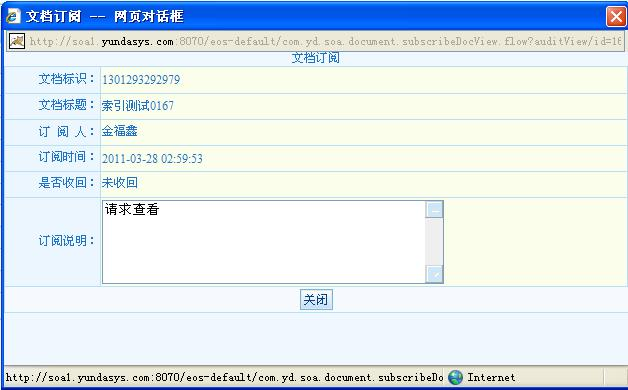

审批文档分为文档发布审批和文档共享审批。
文档发布审批：指正常的文档创建并提交，如果该文档需要审批，提交后审批人通过该界面进行文档审核。
文档订阅审批：文档创建者或文档所有者对文档订阅申请者的审批，对已经订阅的文档可以进行订阅收回。
审批列表中的操作有通过、不通过、订阅收回。通过和不通过操作必须选择同一审批类型和待审批状态，订阅收回是对订阅审批通过的文档进行回收订阅者查看权限的操作。
文档审批列表
如果审批类型是订阅审批

订阅查看信息界面